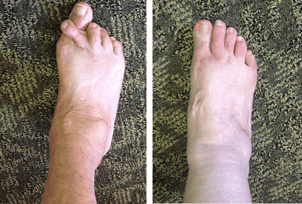
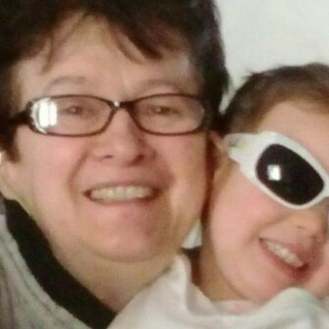
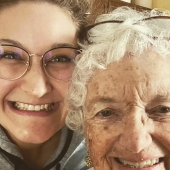
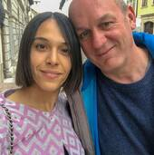

V Mariboru živi človek, ki ovrže vse, kar vemo o staranju. Pri 102 letih se prof. dr. Dimitrij Avsec vsako jutro sprehodi po poteh Mestnega parka, se brez pomoči vzpne po stopnicah in v življenju ni nikoli uporabljal palice. Kolegi iz njegove generacije so ta svet že zdavnaj zapustili ali pa so priklenjeni na invalidski voziček — on pa še naprej dela.
Do lani je prof. Avsec sprejemal paciente v ortopedski ambulanti Univerzitetnega kliničnega centra Maribor. Več kot 70 let prakse, več kot 40.000 pacientov, na desetine hrbtenic in kolenskih sklepov, ki so jih drugi zdravniki že odpisali, pa jih je on rešil. Čakalna doba je bila šest mesecev — ljudje so prihajali iz vse države, da bi ga videli.
Toda prava skrivnost niso njegovi pacienti. Prava skrivnost je on sam. Pri 102 letih — ne artritisa, ne artroze, ne hernije diska. Rentgenske slike njegovih sklepov so videti kot pri 45-letnem moškem. Zdravniki, ki ga pregledujejo, preprosto ne verjamejo svojim očem.
Desetletja je svojo metodo ohranjal v tajnosti — uporabljal jo je izključno pri svojih pacientih in je nikoli ni objavil. Danes pa, ko mu zdravje ne dopušča več, da bi bolnike sprejemal osebno, se je profesor odločil za korak, ki je spremenil vse: da svojo formulo naredi dostopno vsakemu Slovencu.

Prof. dr. Dimitrij Avsec: „Vse življenje sem opazoval, kako se ljudje prezgodaj starajo — ne zato, ker bi bilo njihovo telo šibko, temveč zato, ker jim nihče ni povedal, kako naj sprožijo lastne mehanizme obnove. Pri 102 letih sem živ dokaz, da sklepi lahko ostanejo zdravi do pozne starosti, če veš, kako „prebuditi" celice, ki jih gradijo.
MOJ CILJ JE BIL VEDNO EN SAM — POMAGATI TELESU, DA USTVARI NOVO HRUSTANČNO IN KOSTNO TKIVO, PRAV TAKO KOT V MLADOSTI. ZDAJ JE MOJ SIN ALEŠ VSE TO SPREMENIL V IZDELEK, KI LAHKO PRIDE V VSAK DOM V SLOVENIJI."
Dr. Aleš Avsec — profesorjev sin — je z odliko diplomiral na Medicinski fakulteti v Ljubljani in se specializiral za ortopedijo in regenerativno medicino. Leta je preučeval očetovo metodo, opravljal laboratorijske analize in sodeloval z mednarodnimi ekipami, da bi desetletja izkušenj prof. Avsca spremenil v sodoben in dostopen izdelek.
Rezultat tega sodelovanja je presegel vsa pričakovanja. A preden vam povem o izdelku, poglejmo, zakaj je skoraj vse, kar veste o zdravljenju sklepov, najverjetneje napačno.
Laž, v katero verjame vsa Slovenija:
„Protibolečinske tablete zdravijo sklepe" — NAPAKA, uničujejo jih še hitreje!
Prof. dr. Dimitrij Avsec:
— Sedemdeset let zdravim ljudi in povedal vam bom nekaj, česar vam lekarne nikoli ne bodo priznale: nobena protibolečinska tableta v zgodovini medicine ni obnovila niti milimetra hrustanca. Nobena! Otopijo bolečino, medtem pa se hrustanec še naprej razkraja — le da vi tega ne čutite več. In ko boste spet čutili, bo prepozno.
Toda to ni najhujše. Najhujše je, kaj te kemične snovi počnejo vašim notranjim organom. V 70 letih dela sem videl na stotine pacientov s popolnoma uničenimi jetri in ledvicami — ne zaradi bolezni, temveč zaradi zdravil! Telo ni bilo ustvarjeno, da bi desetletja požiralo kemikalije. Pa vendar konvencionalna medicina „predpisuje" prav to.
Posebej ranljiva je hrbtenica. Medvretenčne ploščice nimajo lastnega ožilja — hranijo se z difuzijo, kar pomeni, da njihovo propadanje poteka tiho, brez bolečine, včasih leta. Ko se bolečina končno pojavi, je okvara že napredovala. Utesnitev živca zaradi hernije diska spremeni življenje v nočno moro: začne se z rahlim mravljinčenjem v nogi in konča s popolno izgubo gibljivosti.
Poglejte, kaj kaže ta rentgenska slika. Ženska, komaj 39 let, učiteljica — njena hrbtenica pa je v stanju, kakršnega bi pred 20 leti videl šele pri 70-letnem pacientu. Osem ur sedenja na dan, pomanjkanje gibanja in popolno nepoznavanje lastnega telesa — to prinaša sodoben način življenja.

Če po 40. letu čutite bolečino, okorelost ali pokanje v sklepih — vaš hrustanec se že razkraja. To ni „od utrujenosti" in to ni „normalno".
Pri hrbtenici je proces večkrat hitrejši in bolj zahrbten — bolečina se pojavi šele, ko je okvara že kritična!
Prof. dr. Dimitrij Avsec:
— Želim biti povsem neposreden. Poznam ljudi, ki so odlašali mesece. Rezultat? Utesnjen živec, ki ni nikoli več deloval normalno. Obnavljanje ploščic, ko je živec že mrtev, je brezpredmetno — PLOŠČICO JE MOGOČE OBNOVITI, ŽIVCA PA — NE! In kaj ostane potem? PALICA, INVALIDSKI VOZIČEK IN ODVISNOST OD TUJE POMOČI DO KONCA ŽIVLJENJA!
In kaj ponuja sodobna kirurgija? Drage in tvegane operacije s kovinskimi vsadki. Osebno sem videl na stotine pacientov, ki so se po operaciji hrbtenice počutili SLABŠE kot prej. OKUŽBE, NEUSPELE ZARASTITVE, KRONIČNA BOLEČINA IN NAZADNJE — PONOVNA OPERACIJA. VČASIH PA — NEPOPRAVLJIVE OKVARE!
 Prof. Avsec kaže rentgensko sliko pacienta po operaciji s kovinskimi vijaki: „To je tipičen izid — vsadek se ni pravilno prijel, okoliška tkiva so vneta, bolečina pa je močnejša kot pred operacijo. Videl sem na stotine podobnih primerov."
Prof. Avsec kaže rentgensko sliko pacienta po operaciji s kovinskimi vijaki: „To je tipičen izid — vsadek se ni pravilno prijel, okoliška tkiva so vneta, bolečina pa je močnejša kot pred operacijo. Videl sem na stotine podobnih primerov."
Statistika je neusmiljena: pri 60 % operiranih se hernija ponovi v 2–4 letih. In cena? Meseci negibnosti, tisoči evrov in popolna negotovost. Mnogi priznavajo: če bi lahko zavrteli čas nazaj, se na operacijsko mizo ne bi nikoli ulegli.
Ti simptomi pomenijo, da vaš hrustanec že umira! Če pa imate več kot 40–50 let — je proces brez ukrepanja nepovraten!
— V 70 letih prakse sem pregledal več kot 40.000 pacientov in lahko povem tole: vsaka prezrta bolečina v sklepih je korak proti invalidskemu vozičku. Samo v letu je bilo v Sloveniji zabeleženih več kot 125.000 novih primerov hudih sklepnih obolenj — od tega 23.000 pri ljudeh med 38. in 48. letom. To ni težava starosti. To je težava neukrepanja.
Če vam je telo že poslalo kateregakoli od teh znakov — ne čakajte niti dneva!
Tu je seznam, ki ga dam vsakemu pacientu ob prvem pregledu:
- Jutranja okorelost, ki z gibanjem ne mine;
- Škripanje, pokanje ali hreščanje ob gibu;
- Okrepitev bolečine ob spremembi vremena;
- Težave pri upogibanju ali iztegovanju kolen;
- Oteklina, rdečina ali toplota okoli sklepa;
- Bolečina pri hoji po stopnicah navzgor ali navzdol;
- Kronična utrujenost in težke noge;
- Bolečine v ledvenem predelu, ki „streljajo" v stegno ali stopalo;
- Odrevenelost ali mravljinčenje v prstih;
- Sprememba hoje — šepanje, nestabilnost;
- Nezmožnost stati dlje kot 10–15 minut;
Če se prepoznate že v dveh od teh simptomov — vaš hrustanec se že uničuje. Pri hrbtenici pa je proces trikrat do štirikrat hitrejši, ker so medvretenčne ploščice pod stalnim pritiskom. POSLEDICA: HERNIJA, UTESNJEN ŽIVEC, DEFORMACIJA VRETENC, IZGUBA GIBLJIVOSTI — IN VSE TO SE LAHKO ZGODI V NEKAJ TEDNIH! Ne odlašajte, kajti organizem vam ne daje neskončnih priložnosti!
Poglejte te ljudi spodaj. Vsak od njih je imel enake simptome, kot jih verjetno v tem trenutku čutite vi. Vsak je rekel „bo že minilo". In vsak bi danes dal vse, da bi zavrtel čas nazaj in ukrepal takrat, ko je še bila možnost.


Prof. dr. Dimitrij Avsec:
Star sem 102 leti in iz lastnih izkušenj vam lahko povem: organizem se je sposoben obnoviti v KATERIKOLI starosti — pod pogojem, da veste, KAKO ga sprožiti. Prav temu sem posvetil svoje življenje. ČE PA IMATE ŽE VEČ KOT 50–60 LET, NE ČAKAJTE NITI SEKUNDE! Pri vas je okvara skoraj zagotovo vstopila v kritično fazo — nujno je treba ustaviti razkroj in sprožiti nastajanje novega hrustanca, novih kosti in novih tkiv!
Primeri, ki so jih drugi zdravniki razglasili za brezupne! Frančiška Tomažič je pri 86 letih spet hodila brez pomoči, potem ko so jo tri bolnišnice zavrnile. To je njena zgodba…
Frančiška Tomažič s Ptuja je trpela za hudo artrozo kolenskih sklepov in več hernijami diska. Tri različne bolnišnice so jo zavrnile — povsod so ji govorili isto: „Pri teh letih se ne da več nič storiti." Njena hči je po naključju izvedela za prof. Avsca od znancev iz vasi pri Mariboru in se odločila, da ga poišče.

„Živela sem kot v zaporu — moja lastna hiša je postala celica. Nisem mogla do kopalnice, nisem mogla stati več kot minuto, nisem si mogla skuhati čaja. Moji otroci so delali in niso mogli prihajati vsak dan. Ležala sem in gledala v strop. Zdravniki so rekli, da operacija pri teh letih nima smisla, in so mi dali samo protibolečinske tablete.
Ko me je hči odpeljala k prof. Avscu, me je pogledal in mi rekel nekaj, česar mi ni rekel noben zdravnik: „Gospa Frančiška, vaše telo se NI nehalo boriti. Samo nihče mu ni pomagal." Dal mi je zdravljenje in mi rekel, naj bom potrpežljiva. V tretjem tednu sem prvič po letu in pol SAMA vstala iz postelje!
Danes, pet mesecev pozneje, hodim v trgovino, kuham, celo negujem vrtiček pred blokom. Pri 86 letih! Ko so me sosedje videli na dvorišču, niso verjeli. Mislili so, da me ne bodo več videli. Prof. Avsec mi je vrnil življenje — in nimam besed, s katerimi bi se mu zahvalila."
Frančiška Tomažič, 86 let, PtujDrug izjemen primer je Bojan Ivančič — 47-letni gradbenik iz Novega mesta, ki je po 20 letih težkega fizičnega dela utrpel hudo okvaro hrbtenice in se je moral premikati na invalidskem vozičku.
Bojan je preizkusil metodo prof. Avsca, rezultati pa so šokirali celo njegovega osebnega zdravnika. NJEGOVA HRBTENICA SE JE ZAČELA OBNAVLJATI, BOLEČINA JE POVSEM IZGINILA, NAJBOLJ NEVERJETNO PA — INVALIDSKI VOZIČEK JE OPUSTIL ŽE PO 4 TEDNIH!
Bojan nam je povedal:
 „Dvajset let sem gradil stavbe, za svojo hrbtenico pa nisem skrbel. Nekega jutra sem se zbudil in nisem mogel premakniti ledvenega dela. Žena je poklicala rešilca. Diagnoza — tri hernije in pritisk na živčno korenino. Zdravniki so predlagali operacijo za 3.000 €, a brez jamstev.
„Dvajset let sem gradil stavbe, za svojo hrbtenico pa nisem skrbel. Nekega jutra sem se zbudil in nisem mogel premakniti ledvenega dela. Žena je poklicala rešilca. Diagnoza — tri hernije in pritisk na živčno korenino. Zdravniki so predlagali operacijo za 3.000 €, a brez jamstev.
Mesece sem preždel doma na invalidskem vozičku. Otroci so me gledali z žalostjo, žena je vsak večer jokala. Počutil sem se kot breme. Želel sem si izginiti…
Takrat je moj tast slišal za prof. Avsca od njegovega nekdanjega pacienta. Poklical sem, poslal rentgenske slike in profesor je rekel: „Ni prepozno." Te tri besede so mi dale več upanja kot vse, kar sem slišal od desetin zdravnikov.
Četrti dan sem že lahko stal. Celotna kura je trajala 80 dni. Danes spet delam — ne na gradbišču, ampak v pisarni, a HODIM. Tekam z otroki po parku. Živim. Rentgen kaže, da so se moje ploščice obnovile za 90 %. Prof. Avsec je edini zdravnik, ki me ni zavrnil — in edini, ki me je pozdravil."
Zgodbe tisočev pacientov prof. Avsca so prav tako osupljive: ljudje, ki so jim drugi zdravniki govorili „navadite se na bolečino", so spet hodili, spet tekli, spet živeli. Kako je to mogoče?
Formula, ki jo je prof. Avsec več kot 40 let uporabljal pri svojih pacientih! Skrivnost metode „Endogena reaktivacija tkiv" — kako organizem sam začne ustvarjati nov hrustanec, nove kosti in nove vezi!
Prof. dr. Dimitrij Avsec:
— Dovolite, da vam razložim nekaj, česar konvencionalna medicina noče priznati. Organizem vsakega človeka — tudi 90-letnika — ima „speče" regenerativne celice. Iste celice, ki so vam v mladosti brez težav gradile hrustanec, kosti in vezi. Z leti ne odmrejo — preprosto „zaspijo", ker jim organizem preneha pošiljati prave signale.
Pred 40 leti sem odkril, da določena kombinacija naravnih snovi — v strogo določenih razmerjih — deluje kot „ključ za vžig" za te speče celice. Metodo sem poimenoval „Endogena reaktivacija tkiv" — ker ne vnaša ničesar umetnega, temveč sproži lastne vire organizma. Prav zato pri meni NI stranskih učinkov, NI okvar organov in NI odvisnosti.
Štiri desetletja sem to metodo uporabljal pri vsakem svojem pacientu — in pri vsakem sem opazil isti rezultat: ustavitev razkroja, zmanjšanje bolečine in postopno povrnitev delovanja sklepa. Na stotine pacientov, ki so jih k meni poslali „kot zadnjo možnost", je iz moje ambulante odšlo po lastnih nogah.
Formula sama po sebi ni zapletena — a natančnost je vse. Vsaka sestavina mora biti v točni količini, do stotinke miligrama. Če razmerja niso spoštovana, učinek preprosto izgine. Prav zato sem metodo desetletja uporabljal osebno — ker je nisem mogel zaupati lekarnam.
Sestava gela po recepturi prof. Avsca (učinkovine):
- Arnica montana gorska arnika: naravno protivnetno in protibolečinsko delovanje
- Mentol naravno hladilo: takojšnje olajšanje bolečine
- Harpagophytum procumbens vražji krempelj, izvleček korenine: močno protivnetno delovanje
- Boswellia serrata indijski kadilovec, izvleček smole: koncentrirana bosvelinska kislina
- Robinia pseudoacacia robinija, izvleček cvetov: protioteklinsko in regenerativno delovanje
- Kafra takojšnje pomirjenje bolečine in otekline
- Hialuronska kislina obnova sklepne tekočine — naravnega „maziva" sklepa
Te sestavine so videti preproste, a jih je izjemno težko dobiti v ustrezni kakovosti in iz pravega vira. Večine ni v lekarnah in jih je treba pripeljati z različnih koncev sveta. Mešanje doma pa je praktično nemogoče — ker mora biti odmerjanje natančno do 0,1 mg.
Prav zato sem desetletja formulo uporabljal osebno, pri vsakem pacientu posebej. Toda moj sin Aleš je videl celotno sliko.
Kako je dr. Aleš Avsec 40-letno metodo svojega očeta spremenil v gel, dostopen vsakomur — Nautubone
Dr. Aleš Avsec:
— Odraščal sem v očetovi ambulanti. Vsak dan sem videl, kako ljudje vstopajo, zviti od bolečine — in odhajajo nasmejani. Pri 14 letih sem recepturo že znal na pamet. A šele ko sem diplomiral na Medicinski fakulteti v Ljubljani in začel sodelovati z mednarodnimi znanstvenimi ekipami, sem razumel, kako edinstveno je to, kar je ustvaril moj oče.
Pet let sem preživel v laboratorijih v Ljubljani in Münchnu, da bi razumel, ZAKAJ očetova formula tako dobro deluje. Odgovor me je osupnil: kombinacija teh sestavin v natančnih razmerjih sproži nastajanje kolagena tipa II in proteoglikanov — dveh glavnih gradnikov hrustanca. Z drugimi besedami: organizem se dobesedno „spomni", kako naj zgradi nov hrustanec, potrebuje le pravi signal.
Razvili smo tehnologijo, ki smo jo poimenovali „Tehnologija nanodifuzije z napredno biološko uporabnostjo" — metoda, pri kateri so učinkovine zaprte v posebne nanodelce, ki nepoškodovani prodrejo skozi kožo in pridejo naravnost do poškodovanega sklepnega tkiva. To poveča vsrkavanje za približno 380 % v primerjavi z običajnimi mazili. Izdelek sem poimenoval Nautubone — gel, ki se nanaša na kožo in deluje natanko tam, kjer je potrebno. Poimenoval sem ga v čast svojemu očetu in njegovemu 40-letnemu delu.

Gel Nautubone vsebuje vse sestavine iz izvirne očetove formule, poleg tega pa še 29 dodatnih izvlečkov in vitaminov, ki smo jih odkrili med laboratorijskimi raziskavami v Münchnu. Rezultat je gel, ki deluje PRAV TAKO DOBRO kot osebna obravnava pri prof. Avscu — le da ga je mogoče dostaviti v vsak dom v Sloveniji. Nanašate ga dvakrat na dan, učinkovine pa pridejo naravnost do prizadetih sklepov.
„Nautubone je dediščina mojega očeta — njegovih 40 let izkušenj, zaprtih v eno formulo. Vsaka sestavina je izbrana z natančnostjo, s kakršno je on pristopal k vsakemu pacientu. To ni množičen izdelek iz lekarne — to je delo celega življenja, posvečenega zdravljenju."
Najbolj neverjetno pri Nautubone je, da ne blaži le bolečine — temveč sproži mehanizem obnove, ki je z leti zaspal. Gel se nanese na kožo, nanodelci pa učinkovine odnesejo globoko v sklepno tkivo — tja, kamor običajne tablete in injekcije nikoli ne pridejo. Sinergija med sestavinami okrepi učinek do 20-krat v primerjavi z njihovo ločeno uporabo.
Štiri faze okrevanja z Nautubone — kaj se korak za korakom dogaja v vašem telesu
Prof. dr. Dimitrij Avsec:
— V vsem svojem zdravniškem življenju sem opazoval, kako moji pacienti gredo skozi iste štiri faze. Moj sin jih je znanstveno dokumentiral in vgradil v Nautubone, tako da jih lahko vsakdo prehodi doma.
Štiri faze „Endogene reaktivacije tkiv":
- Faza 1 — Ustavitev bolečine in vnetja: Že od prvega nanosa gela nanodelci prenesejo učinkovine skozi kožo naravnost v poškodovana tkiva in blokirajo vnetne molekule. Bolečina vidno popusti v 24–48 urah — brez obremenjevanja jeter in ledvic, saj gel uporablja ciljno vsrkavanje skozi kožo in ne gre skozi prebavila in jetrni metabolizem.
- Faza 2 — Zaustavitev razkroja: Med 3. in 7. dnem organizem preneha razgrajevati hrustančno in kostno tkivo. Poveča se nastajanje sklepne tekočine — naravnega „maziva" sklepov. Trenje se zmanjša, gibi postanejo lažji.
- Faza 3 — Prebujanje regenerativnih celic: To je srce metode. „Speči" hondrociti in osteoblasti prejmejo biokemični signal in začnejo ustvarjati nov hrustanec in kostno tkivo. Prav ta faza dela Nautubone edinstven — noben drug izdelek tega mehanizma ne sproži.
- Faza 4 — Trajna zaščitna pregrada: Po 30–60 dneh novonastala tkiva ustvarijo trdno zaščitno plast, ki sklepe naredi odporne tudi na napor. Prof. Avsec temu pravi „imunost sklepov" — ko je enkrat dosežena, se učinek ohrani leta.
Vsaka od teh faz je rezultat 40 let klinične prakse in 5 let laboratorijskih raziskav. Nautubone ne ponuja hitrega „prekrivanja" bolečine — temveč sproži globok, biološki proces obnove, ki sklepe vrne v stanje, v kakršnem so bili pred desetletji.
Klinični rezultati, ki so šokirali medicinsko skupnost — testi pri 2.340 pacientih, starih od 38 do 89 let
Dr. Aleš Avsec:
— Ko smo objavili prve laboratorijske rezultate, je bil odziv bliskovit. Univerzitetne klinike iz Ljubljane, Berlina in Dunaja so zahtevale, da opravijo lastne raziskave. Rezultati pri resničnih pacientih so presegli celo naša pričakovanja — nobena od obstoječih metod zdravljenja se tem kazalnikom niti ne približa.
Pacienti, ki so bili naročeni na vstavitev endoproteze, so operacije odpovedali. Ljudje, ki mesece niso vstali iz postelje, so spet hodili. Ortopedi v kontrolnih skupinah niso verjeli lastnim rentgenskim slikam.
Rezultati kliničnih raziskav „Nautubone" pri 2.340 pacientih, starih od 38 do 89 let
| Popolna odprava bolečine in vnetja | 100% |
| Povrnitev polnega obsega gibanja | 94,7% |
| Tendinitis, burzitis, periartritis | 96,3% |
| Ustavitev in obrat degenerativnih sprememb | 97,8% |
| Sinovitis, ligamentitis | 98,1% |
| Osteoartritis (vse stopnje) | 87,2% |
| Osteoporoza | 93,6% |
| Revmatoidni artritis, protin | 95,4% |
| Artroza, spondiloartritis | 91,8% |
| Dokumentirana obnova hrustančnega tkiva | 98,3% |
Natančni roki okrevanja z „Nautubone":
Druge znanstvene ekipe v Evropi poskušajo reproducirati našo formulo, a so njihovi dosedanji rezultati daleč od naših. Tehnologije nanodifuzije z napredno biološko uporabnostjo, ki jo je razvil dr. Aleš Avsec, še vedno ni mogoče ponoviti — prav ta omogoča, da gel učinkovine dostavi naravnost v sklep skozi kožo, namesto da bi ostale zgolj na njeni površini.
Kako dolgo traja popolno okrevanje? Prof. Avsec pojasnjuje na podlagi 70 let izkušenj
Prof. dr. Dimitrij Avsec:
— Najkrajša kura, ki jo priporočam, traja 30 dni. Pri hujših okvarah — 60, včasih tudi 90 dni. Toda v vsej svoji karieri NISEM IMEL NITI ENEGA PRIMERA, v katerem metoda ne bi dala rezultata. Niti enega. In zdravil sem ljudi, stare 85, 90, celo 94 let.
Nautubone ne ustavi le bolečine — sproži globok proces biološke obnove. Gel nanašajte dvakrat na dan in olajšanje boste občutili že v prvih urah. V enem tednu boste opazili, da se gibljete lažje. Po celotni kuri pa bodo vaši sklepi v stanju, v kakršnem so bili pred 20–30 leti. Najdragocenejše pa je nekaj drugega: učinek je TRAJEN. Ko so regenerativne celice enkrat „prebujene", delujejo naprej še leta!
Zahvaljujoč „Nautubone" je več kot 19.000 ljudi v Sloveniji dobilo nazaj gibljivost. Tu je le majhen del pacientov prof. Avsca:



Prof. dr. Dimitrij Avsec:
— Te fotografije niso čudeži — to je znanost. Vsak od teh ljudi je dobil nazaj nekaj, o čemer so mu drugi zdravniki rekli, da je nemogoče: zdrave sklepe in življenje brez bolečine. Nautubone JE VRHUNEC VSEGA MOJEGA ZDRAVNIŠKEGA ŽIVLJENJA — IN MOJA DEDIŠČINA ZA PRIHODNJE RODOVE!
Zakaj prof. Avsec ne sprejema več pacientov — in kako je Nautubone postal edini način, da pridete do njegove metode „Zdravje mi ne dopušča več, da bi bolnike sprejemal osebno. A moja formula bo zdravila naprej — skozi roke mojega sina."
Prof. dr. Dimitrij Avsec:
— Lani sem sprejel najtežjo odločitev v življenju: da ne bom več sprejemal bolnikov. Na čakalni listi je bilo več kot 2.000 imen — in nisem jih mogel pustiti brez pomoči. Zato sem sina Aleša prosil, naj formulo spremeni v izdelek, dostopen vsakomur. Zdaj sem miren — Nautubone je natanko to, kar sem dajal svojim pacientom, le v priročni obliki. Formula je v varnih rokah.
Dr. Aleš Avsec: — Nautubone se ne prodaja v lekarnah — proizvodni postopek je zapleten, količine pa so omejene. Dostopen je samo prek spletnega programa, dvakrat na leto. V okviru programa pa popusti dosežejo 50% — ker naš cilj ni dobiček, temveč dostopnost. Še posebej za upokojence, za katere je oče vztrajal, da morajo imeti največji popust.
Za prijavo uporabite spodnji uradni obrazec za naročilo — ta prihaja neposredno od proizvodne ekipe dr. Aleša Avsca.
Ne zamudite zadnje priložnosti letos — Nautubone lahko poide pred koncem programa!

Dr. Aleš Avsec:
— Letos nam je uspelo izdelati 5 000 paketov gela Nautubone posebej za ljudi v Sloveniji. A glede na povpraševanje — ki je ogromno — bodo te količine hitro pošle. Naslednja serija bo pripravljena šele konec 2026.
Podporni program je aktiven do — vsak prebivalec Slovenije, starejši od 40 let, lahko dobi do 50 % popusta. Po tem datumu boste morali na novo priložnost čakati vsaj 6 mesecev.
Ne odlašajte. Oče je pacientom vedno govoril: „Sklepi vas ne čakajo — uničujejo se vsako sekundo." Dokler je program aktiven, ga izkoristite. Nautubone ima kumulativni učinek — ena celotna kura zadošča za 5–6 let zdravih sklepov.
Preprosto vpišite ime in telefonsko številko v obrazec. Svetovalec vas bo poklical, pripravil individualen program za vaš primer in uredil dostavo na katerikoli naslov v Sloveniji — v 2–3 dneh, po pošti ali s kurirjem do vaših vrat.
Vsem želim zdravje! Poskrbite za svoje sklepe danes, da boste jutri hodili! S spoštovanjem: prof. dr. Dimitrij Avsec in dr. Aleš Avsec.
Posodobitev: : Zaradi izjemno velikega povpraševanja so lahko zaloge Nautubone izčrpane pred načrtovanim koncem programa! Danes — 18. 12. 2025 — je zadnji dan za naročilo s popustom ali do izčrpanja zalog.

Pozor! Ne zapirajte in ne osvežujte strani — za vas rezervirani gel Nautubone bo ponujen naslednjemu s čakalne liste!
Vaše rezervirano mesto v programu: Št. 19 974
KOMENTARJI:
Vera Stanič
Ta članek sem čakala mesece! Prijateljica iz Maribora je bila pred nekaj leti osebno pri prof. Avscu — pravila je, da to ni zdravnik, ampak čudež. Škoda, da ne sprejema več pacientov, ampak če ima Nautubone isto formulo — naročim takoj. Vesela sem, da sem ujela popust!
Štefka Kovačič
Kurir mi ga je prinesel v sredo. Deset dni ga nanašam zjutraj in zvečer — in razlika je OGROMNA! Vstanem brez tistega groznega škripanja! Mož me gleda in ne more verjeti. Nadaljevala bom celotno 60-dnevno kuro, a sem že zdaj prepričana, da deluje.

Rozalija Marinič
Imam 72 let in tri leta sem trpela za bolečinami v kolčnem sklepu. Hoja je bila mučenje. Ortoped je rekel: „Endoproteza ali potrpite." Nisem hotela ne enega ne drugega. Nautubone mi je pomagal v dveh mesecih — zdaj se vsak dan sprehodim kilometer in pol! Rentgen pa kaže izboljšanje, ki ga moj zdravnik ne zna pojasniti. Hvala prof. Avscu in njegovemu sinu!
Vasja Gregorič
Kot nekdanji športnik vem, kaj pomeni živeti z uničenim hrustancem. Moja kolena so bila kot pri 90-letniku — pa imam komaj 54. Nautubone mi je vrnil gibe, ki jih nisem naredil 10 let. Spet lahko počepnem! Ne poznam drugega izdelka, ki bi zmogel kaj takega.
Petronela Jordan
Malo me skrbi… Se splača? Imam 66 let, sklepi mi pokajo ob vsakem gibu in hrbet mi ne da miru. Ampak tolikokrat sem se razočarala nad raznimi „čudežnimi" sredstvi, da mi je že težko verjeti. Res pomaga?
Danijel Kristan
Gospa Petronela, vaše dvome povsem razumem — tudi sam sem jih imel. Ampak Nautubone je drugačen od vsega, kar sem kdaj poskusil. Uporabljam ga 5 tednov za kolena in ledveni del — in povem vam, da je razlika kot med nočjo in dnevom.
Prej se nisem mogel skloniti, da bi si zavezal čevlje. Zdaj to storim, ne da bi pomislil. Naročite vsaj en paket in presodite sami — nimate česa izgubiti!

Gabrijela Panič
Tri dni po tem, ko sem začela nanašati gel, se je bolečina v kolenu prepolovila! Zdaj je 12. dan in po stopnicah že hodim brez držanja za ograjo. Nadaljevala bom celotno kuro — mislim, da bom po dveh mesecih kot nova!
Ivana Zlatar
Na hrbtu mi je pred dvema mesecema začela rasti „grba". Zgrozila sem se! Poskusila sem razna mazila iz lekarne — nič. Gel Nautubone pa je nekaj povsem drugega — v 40 dneh je grba skoraj povsem izginila! Še naprej ga uporabljam, a sem že zdaj neverjetno zadovoljna. Poglejte, kako je videti razlika:

Pavla Atanasov
Imela sem utesnjen živec v ledvenem delu — od bolečine nisem mogla ne spati ne stati. Zdravnik mi je predpisal močne protibolečinske tablete, od katerih mi je bilo stalno slabo. Začela sem nanašati gel Nautubone dvakrat na dan — po tednu dni je bolečina močno popustila, po mesecu pa je izginila povsem! Kuro nadaljujem, a se je moje življenje že spremenilo!
Ciril Dragan
Imam 79 let in tri leta sem komaj še hodil. Sin mi je naročil Nautubone — ne da bi me vprašal, ker je vedel, da bom odklonil. Vsako jutro in vsak večer mi ga nanese. In rezultat? Po mesecu in pol se vsak dan sprehodim do parka! Počutim se kot 60-letnik! Hvala prof. Avscu — pri 102 letih je modrejši od vseh sodobnih zdravnikov!
Tiber Stojan
Pred Nautubone nisem mogel dvigniti rok nad glavo — rama je pokala in grozno bolela. Dve leti sem hodil po zdravnikih — nihče ni pomagal. Dva meseca z Nautubone in moje roke spet delujejo normalno. Tu je moj rentgen — zdravnik sam ni verjel:

Avrelija Ivanšek
Naročila sem za taščo — ima 81 let in se skoraj ni več mogla dvigniti iz postelje. Zdravniki niso hoteli storiti ničesar — „pri teh letih nič več ne pomaga", so govorili. Z Nautubone pa v 2 mesecih že hodi po dvorišču in celo kuha! Nismo mogli verjeti.
Emil Volčič
Moja žena je štiri mesece ležala — hrbtenica je preprosto odpovedala. Zdravniki so predlagali operacijo za 4.000 € brez vsakega jamstva. Odločili smo se, da poskusimo gel Nautubone — nimamo česa izgubiti. Nanašal sem ji ga dvakrat na dan. Po 5 tednih je vstala. Včeraj sva skupaj šla na tržnico — prvič po pol leta! Jokal sem od sreče.
Nina Borštnar
Naročila sem prejšnji teden, prejela sem tretji dan. Takoj sem začela nanašati gel — olajšanje je prišlo že drugi dan! Kot da mi je nekdo sklepe naoljil od znotraj. Že dva tedna ga nanašam dvakrat na dan in komaj čakam končni rezultat!
Roksana Miklavčič
Imam 74 let. Pet let sem trpela za artrozo in bolečinami v hrbtenici. Poskusila sem dobesedno vse — mazila, tablete, injekcije, fizioterapijo. NIČ ni pomagalo dolgoročno. Gel Nautubone je edino, kar mi je dalo RESNIČEN REZULTAT — nanašam ga dvakrat na dan in v mesecu in pol se moji sklepi počutijo korenito drugače. Zdravnik ne more verjeti rentgenskim slikam!

Vijola Pencelj
Prof. Avsca poznam osebno — pred 12 leti me je zdravil zaradi hernije diska. V treh tednih sem bila spet na nogah! Med mariborskimi ortopedi je legenda. Vesela sem, da njegovo delo nadaljuje sin!

Konstanca Petrič
Oče ima 84 let in tri leta ni šel iz hiše. Sklepi, hrbet, kolena — vse ga je bolelo. Govoril je, da čaka, da gre. Po dveh mesecih z Nautubone — včeraj je šel na dvorišče in zalil vrt! Prvič po treh letih! Ne morem opisati, kaj sem občutila. Iz srca hvala!!!
Mirela Dončič
Ali kdo ve, ali se sme uporabljati pri alergijah? Reagiram skoraj na vse — celo od navadnega aspirina mi otečejo prsti. Strah me je poskusiti kaj novega…
Spiridon Kalčič
Mirela, jaz sem alergičen na štiri vrste zdravil. Gel Nautubone nanašam 50 dni — nobenega draženja, nobene otekline, nobene rdečice. Sestava je v celoti iz naravnih izvlečkov — ne vsebuje kemikalij. Lahko mirno naročite!
Dorina Savnik
Prej nisem imela moči vstati — vsak gib je bil muka, mislila sem, da je mojega življenja konec. Hči je naročila gel Nautubone in me prisilila, da ga poskusim — nanašala mi ga je zjutraj in zvečer. Dva meseca pozneje? Plešem na vnukovi poroki!!! Nikoli v življenju nisem bila tako hvaležna!


Svetlana Bratuž
Naročila sem za mamo. Imela je stalne bolečine v vratu, ki so povzročale vrtoglavico in slabost — njeno življenje je bilo neznosno. V drugem tednu z Nautubone so bolečine močno popustile, vrtoglavica pa je povsem prenehala! Mama se spet smeje — dolgo je nisem videla take.
Snežana Mencin
Sprašujem se — če je prof. Avsec tako dober, zakaj se te stvari ne prodajajo povsod? Zakaj samo po spletu? Zakaj jih lekarne ne ponujajo?
Mihael Rajk
Zato, ker lekarne služijo na ljudeh, ki vsak mesec kupujejo protibolečinske tablete! Če bi si vsi sklepe pozdravili enkrat za vselej — kdo bi potem kupoval njihova draga zdravila? Razmislite logično!
Ivana Krumperk
Prebrala sem vse komentarje — in me je ganilo. Naročam zdaj, zase in za moža. Vzela sem tri pakete gela, za celotno kuro. Če bo pomagalo vsaj napol toliko, kot pišejo ljudje — bom srečna!
Florentina Marinič
Ortoped mi je rekel, da se moram pri 63 letih navaditi na bolečino — da zdravila ni. Nautubone sem naročila kljub vsemu. Bomo videli, kdo ima prav!